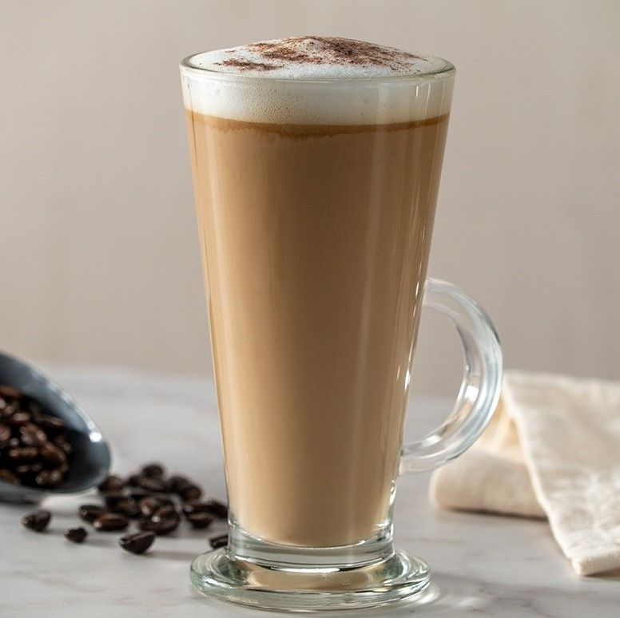

Раф кофе

Нажмите на изображение, чтобы увидеть в полном размере
Описание
Раф кофе — это нежный и сливочный кофейный напиток, который пришелся по душе многим гурманам. Готовится на основе эспрессо с добавлением сливок и ванильного сахара. Взбивается в питчере до образования густой и воздушной пены. Наш раф кофе подарит вам настоящее наслаждение и ощущение уюта.
Характеристики
- Состав: Эспрессо, сливки 11%, ванильный сахар
- Объем: 250 мл / 350 мл
- Калорийность: 180 ккал / 250 мл
- Температура подачи: Горячий
- Дополнительно: Можно добавить сироп (карамель, орех, лаванда)
- Цена: 250 руб. / 250 мл